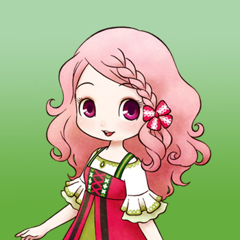
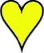

Popuri



Popuri es la hija testaruda de Jeff y Sasha. Ella ayudará a administrar la tienda general, pero en general dejará que su padre se encargue del lugar. Popuri es extrovertida, sensata y confiable, pero desea un poco de romance. A veces la encontrarás de noche en la playa, mirando el océano.
Si te casas con Popuri, ella comenzará su mañana en la casa de la granja. El martes o domingo se quedará en casa todo el día. Si es cualquier otro día de la semana, ayudará a Jeff con la tienda de 8:00 am a 5:00 pm.
| Cumpleaños | 15 de otoño (primaria) o 23 de otoño (alternativa) |
|---|
| Amistad extra | Gana +2500 LP cuando realices una compra un total de 20, 40, 60, 80 y 100 veces en la tienda de Jeff. |
|---|
| Rival | Kai |
|---|
| Horario |
- Popuri no se aleja demasiado de la tienda general. La mayor parte del tiempo estará en la trastienda de la tienda o en el área principal de la tienda.
- De 8:00 am a 10:00 pm (excepto domingos y martes) se sienta en el banco afuera de la tienda con Rick y luego de 7:00 pm a 10:00 pm estará en la playa.
- Los martes soleados estará en el estanque de la Diosa desde la 1:00 pm hasta las 4:00 pm, y los martes lluviosos irá a la tienda de Gotts.
- En cualquier escenario climático, también visitará la posada desde las 7:00 p. m. (soleado) o las 7:30 p. m. (lluvioso) hasta las 10:00 p. m. en lugar de estar en la playa. Los domingos se queda dentro del almacén hasta que se dirige a la posada.
|
|---|
Preferencias de regalo
La mejor forma de mejorar la amistad y el afecto es siempre regalar las cosas que le gusta una vez por dia.
Eventos del corazón
Cada evento que ocurra el jugador tendra que escoger entre dos respuesta en la que uno ayuda a conseguir muchos puntos y la otra suele ser neutral o quitar puntos.
Cuando el candidato tenga corazón naranja puedes proponerle matrimonio con la pluma azul y despues de la boda tendra un corazón rojo.
Evento de Introducción
| Corazón | Requisitos | Mejor espuesta |
|---|
|
- Entra en la tienda de Jeff.
- Puede ser Miercoles o Viernes.
- 10:00 am a 1:00 pm
- Cualquier clima
- Tener un espacio vacío para objetos en tu mochila.
|
Opción 1: Me vendría bien un poco de ayuda... |
Evento del Corazón Negro
| Corazón | Requisitos | Mejor respuesta |
|---|
|
- Entra en la tienda de Jeff.
- Puede ser Lunes, Jueves o Sabado.
- 10:00 am a 1:00 pm
- Cualquier clima
- Tener un espacio vacío para objetos en tu mochila.
- Has visto el evento de Introducción
- Popuri tiene un color de corazón negro (5.000 LP) o superior.
|
Opción 1: Semillas de flores Moondrop. |
Evento del Corazón Púrpura
| Corazón | Requisitos | Mejor respuesta |
|---|
|
- Entra en la tienda de Jeff.
- Puede ser miércoles o viernes.
- 10:00 am a 1:00 pm
- Cualquier clima
- Tener un espacio vacío para objetos en tu mochila.
- Has visto el evento de corazón negro
- Popuri tiene un color de corazón púrpura (10.000 LP) o superior.
|
Opción 1: Dejar correr el vino. |
Evento del Corazón Azul
| Corazón | Requisitos | Mejor respuesta |
|---|
|
- Entra en la tienda de Jeff.
- Puede ser Lunes, Jueves o Sabado.
- 10:00 am a 1:00 pm
- Cualquier clima
- Tener un espacio vacío para objetos en tu mochila.
- Has visto el evento de corazón púrpura
- Popuri tiene un color de corazón azul (20.000 LP) o superior.
|
Opción 1: Claro. Arrancame. |
Evento del Corazón Amarillo
| Corazón | Requisitos | Mejor respuesta |
|---|
|  |
- Entra en la tienda de Jeff.
- Puede ser Lunes, Jueves o Sabado.
- 10:00 am a 1:00 pm
- Debe ser soleado
- Mei, Popuri y Yu tienen al menos 6 notas musicales (amistad)
- Has visto el evento de corazón azul
- Le has regalado a Popuri una flor preservada.
- Popuri tiene un color de corazón amarillo (40.000 LP) o superior.
|
Opción 1: Soy tu amigo. Déjame ayudar. |
Evento del Corazón Naranja
| Corazón | Requisitos | Mejor respuesta |
|---|
|
- Sal por la entrada sur de tu granja hacia el bosque.
- Cualquier día de la semana.
- 10:00 am a 3:00 pm
- Debe ser soleado
- Has visto el evento de corazón amarillo
- Popuri tiene un color de corazón naranja (50.000 LP) o superior.
|
Opción 2: La linda Popuri es buena. Ella puede colgar. |